RecSoup：先筛选任务更新，再学习偏好对应的模型合并系数
Zidong Jia、Guofu Xie、Xiao Zhang，机构为中国人民大学高瓴人工智能学院。英文原题为 RecSoup: Efficient Model Merging Approach for Controllable Multi-Objective Recommendation。arXiv 首版发布于 2026 年 10 月 15 日 04:08 UTC，即北京时间 12:08；PDF 标注 CIKM 2026 会议论文，本文按 2026 年 10 月 19 日调研记录阅读。
论文入口：RecSoup。作者代码仓库本轮核验返回 HTTP 200；这里只确认公开入口可访问，未复现训练。以下结论以 12 页原文和其中图表为依据。
目录：1. 背景和问题 · 2. 方法 · 3. 实验结果 · 4. 总结
1. 背景和问题
可控多目标推荐需要在推理时按照用户或系统偏好调整准确率、多样性等目标之间的取舍；现有重排受固定候选集限制，参数生成又引入额外模型与计算。直接把单目标推荐模型相加同样困难，因为不同目标的参数更新存在干扰，不能简单沿用大模型任务算术的共享线性区域假设。
这段问题陈述是对论文摘要和引言的压缩译述。它研究的是已经拥有多个目标专家之后，如何低成本地获得一族可调模型，而不是重新定义准确率或多样性。实际推荐策略往往因用户、时段和产品阶段而改变：探索期希望覆盖更多类别，确定需求时希望提高相关性，治理策略又可能要求群体之间更均衡。若每次偏好变化都从头训练，参数版本数量、训练开销和验证成本会随偏好组合增长。因此作者把“训练某个折中点”与“在多个折中点之间持续可控地移动”分成两个问题，后一项才是本文的重点。
所谓可控，不能只理解为接口允许传入一个权重。设准确率偏好从较小值增加到较大值，实际准确率也应总体按预期方向变化；否则输入虽然变化，用户却无法预测输出。与此同时，多个可控点也应有足够好的效果，而不是在两个很差的点之间平滑移动。因此论文同时衡量前沿质量、前沿点数量和偏好响应的一致性。三者并非可以互相替代：一个方法可能只有少数几个高质量点，也可能有很多点但大部分被其他方法支配，或者总体效果不错却对偏好变化不够单调。
输出层重排的优点是模型无关、部署简明，但它只能在已有候选里做选择。若召回阶段几乎没有某一类别物品，后续多样性权重再大，也无法凭空生成这一类别。参数层控制可以更早改变打分结构，因而有机会扩大可实现的折中范围。此前的超网络根据偏好生成参数，扩散方法则逐步构造参数或适配器，两者都多了一层训练和构造负担。RecSoup 的替代路线是复用已经训练好的单目标专家，保留其有用更新，再学习如何配比。这里的节省建立在专家模型已存在或可被训练这一条件上，不能把专家准备成本从整个研究预算中抹去。
原文将已有可控推荐工作按干预位置区分为后处理与处理中两类，这比按模型名字分类更容易理解限制来源。后处理先让固定模型生成候选或初始排序，再根据偏好修正列表；其可控空间因此同时受到候选覆盖和初始相关性分数的约束。如果某类物品本来被基础模型系统性压低，重排在有限候选里只能交换已有物品的位置。即便重排产生多个不同列表，也不意味着它覆盖了重新训练目标模型能得到的所有折中。因此本文希望更早在模型参数上干预，但并没有证明重排在任何任务都较差，主表也保留其在若干配置的较高超体积。
处理中的参数生成方法将偏好送入超网络或扩散模块，输出敏感参数、适配器或更大范围的权重。它的灵活性来自对偏好条件参数族的直接学习，而成本也来自这个额外生成问题：生成模块需要训练、参数规模可能增加，推理时还需重新构造对应权重，扩散生成又有重复去噪步骤。原文指出这种训练可能不稳定，却没有给出所有超网络都会失稳的保证。将它替换为模型合并，实质上是用已有专家更新作为受限基底，换取更小的系数学习问题；代价则是可达解受到已有基底限制，不能把节省计算与保留任意生成能力同时视为当然。
专家复用同样不是把几个文件做加权平均这么简单。原文从共同基模型定义更新，要求每个向量中的同一坐标对应同一参数位置。推荐系统的大量参数又与具体物品索引有关，坐标不一致会让相加失去语义；即便坐标一致，准确率和多样性对同一参数位置的更新也可能方向相反或规模相差很大。大模型中有效的任务算术经验，不能保证这些竞争目标在序列推荐上仍可组合。剪枝动机由此同时涉及更新冗余与跨目标干扰：希望删去低贡献部分，却又不能错误抹掉某一专家赖以保持目标能力的重要坐标。下面的参数敏感性实验正是对这个矛盾的经验说明，而不是一般性的模型压缩宣传。
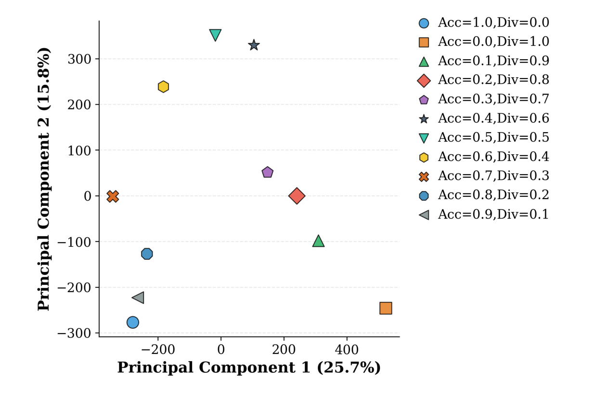
图 2 给出 TiSASRec 不同偏好模型任务向量的二维投影。横轴第一主成分解释约 25.7% 方差，纵轴第二主成分解释约 15.8%，两者合计约 41.5%。不同偏好的点没有形成一条清晰紧凑的轨迹，作者据此认为简单线性组合的几何基础较弱。需要把这项观察看成特定模型与数据下的经验诊断：二维投影遗漏大部分方差，本身不能严格证明不存在任何共享子空间，也不能证明神经切线核近似必然失效。它有助于提出“原始更新不能直接互换”的研究假设，但真正支持方法价值的仍应是合并后的性能对照。不同随机种子、不同基模型参考点或对层进行归一化，都可能改变投影；复现时应一并检查这些因素，而不是只追求与图中点云形状相似。
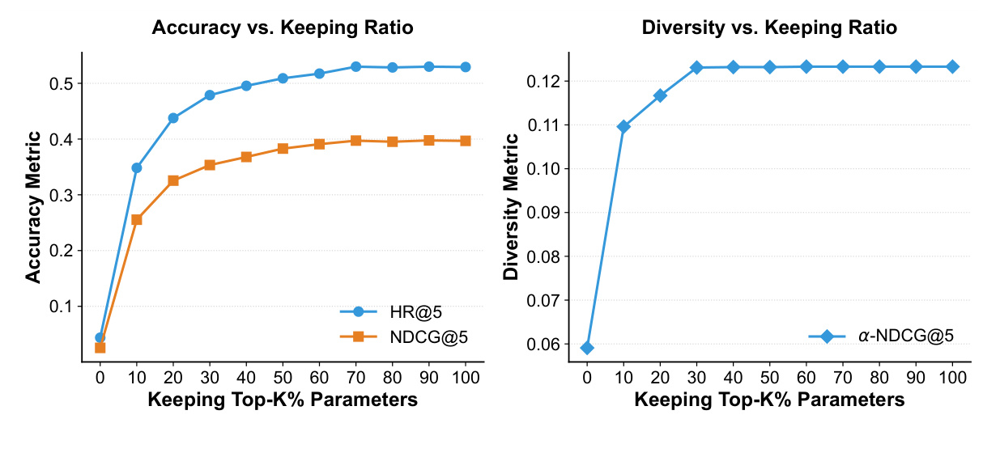
图 3 把参数保留率作为横轴，左边观察准确率的 HR@5 和 NDCG@5，右边观察多样性的 α-NDCG@5。左侧在保留率较低时持续受损，接近约七成之后趋于稳定；右侧更早进入平台。这意味着不同专家的更新冗余程度和性能敏感性并不相同，统一按同一参数数量截断可能伤害某一目标。图中的比例是保留参数数量的比例，与后文按平方范数累计量设定的保留阈值不是同一个量。曲线说明存在压缩空间，也说明不能笼统地说删掉三成参数对所有目标都无影响。它更自然地引出一个有目标差异的选择准则：先识别重要更新，再决定每个专家应保留多少坐标。进一步看，图并不提供压缩后模型的稀疏硬件加速证据；大量更新为零能否加快最终打分，仍取决于表示和运行时实现。
这一背景使本文的两阶段设计具有清楚分工。第一阶段处理哪些坐标值得留下，避免低贡献更新污染其他专家；第二阶段处理保留向量各自应有多大权重。参数筛选与配比学习被分离，是本文比直接线性插值多出的核心结构。研究对象主要是离线序列推荐，实验使用电影和电商评论数据，尚不能据此宣称覆盖工业广告的收益、时延、约束公平性或长期用户满意度。后续精读会把机制、经验收益和理论条件分别说明。
另一个容易混淆的维度是参数兼容性与行为互补性。两个专家的推荐列表差异较大，可能代表覆盖不同兴趣，也可能只是训练随机性产生的偏移；反过来，参数向量相近也不保证对偏好有足够响应。论文把参数空间的诊断与输出空间的前沿共同报告，有助于避免仅看某一种相似性指标便决定合并策略。实际验证还应保持评估负样本相同，确保前沿变化来自模型而不是采样集合差异。
2. 方法
2.1 按目标重要性与跨目标相关性筛选更新
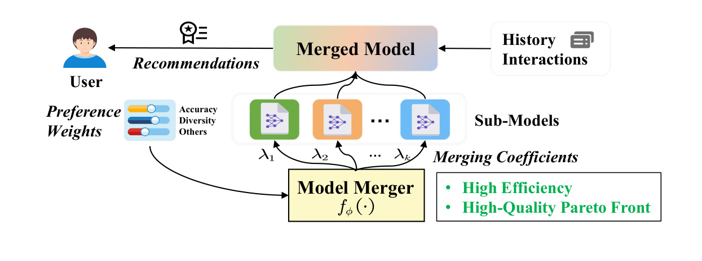
图 1 从信息流上区分了偏好与历史交互。历史交互进入合并后的推荐模型，负责生成具体物品排序；偏好先进入 Model Merger，决定不同目标专家怎样组合。这样，偏好改变的是模型参数，而不是在已经产生的列表上重新排列物品。图下方的各专家是复用的知识来源，门控输出的合并系数承担参数坐标的作用。右侧列出的高效率和高质量前沿是作者希望得到的性质，需要后面的实验分别验证，不能仅由结构图推出。图里也没有表示一个实时读取用户语言指令的系统，偏好是预先定义的数值向量。因此将其迁移到产品时，还需要单独建立用户意图到目标权重的映射，并验证用户真正理解这些控制项。论文解决的是权重给定后的模型组合，不包括权重采集、业务约束审批或用户意图识别。 图中偏好向量先确定各目标的相对重要性，合并器输出的系数则控制专家更新在参数重建中的幅度；即使两个向量维度相同，也不能把它们当作同一个变量。由系数生成模型后，用户历史才通过推荐骨干进入物品打分，这也说明偏好控制路径和行为建模路径在实现中应分别检查。对于同一份历史交互，改变偏好应通过参数组合改变候选得分，而不是将偏好作为额外物品特征直接拼接。图中多个专家到合并模型的箭头还表明，它们共同贡献同一套目标模型参数，并非各自生成列表后投票；所以后面剪枝作用于专家更新坐标，系数学习作用于这些向量的组合权重，两者不能交换为列表层操作。
原文先以同结构的基模型作为参考，把专家模型参数展平成任务更新向量。目标偏好位于单纯形上，但合并系数没有被要求直接等于偏好。偏好表达希望优化什么，系数表达在当前参数基底上怎样实现这一希望。这种分离允许专家更新尺度不同、残留冲突不同的时候，通过配比校准得到更好的输出。参数相加需要坐标语义一致，因此不能把任意独立结构模型的检查点直接相减；基模型、物品索引和参数排列都应匹配。
符号解释：第一个式子对应原文公式（1），第二个对应公式（2）；(\theta_i) 是第 (i) 个目标专家，(\theta_{base}) 是共同参考参数，(\tau_i) 是展平后的更新，(N) 是目标数，(\mu) 是非负且各维之和为一的目标偏好，(\lambda_i) 是待学习映射输出的合并系数。实践中展平后还需要按原张量形状恢复参数。
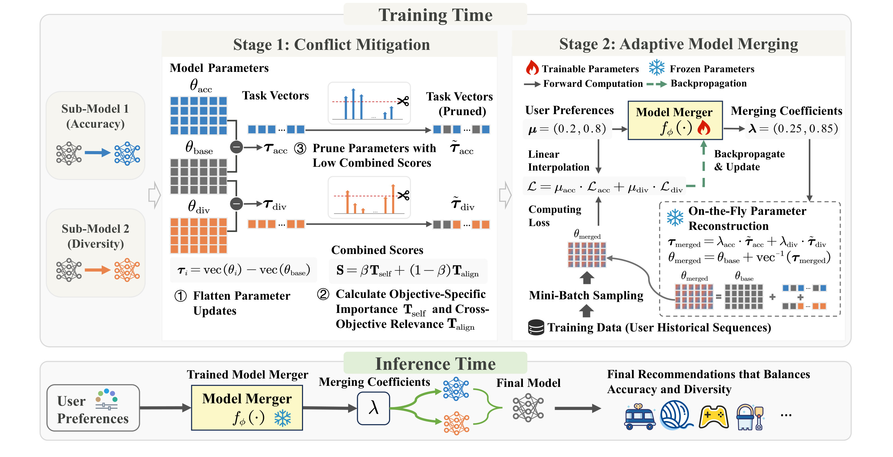
图 4 左侧从准确率和多样性专家中减去基模型，得到两条任务向量；中间按联合分数留下各自重要坐标。它没有把两个专家先拼接为更大的打分网络，也没有对所有原始专家权重联合微调。右侧的火焰只标在 Model Merger 上，说明后续训练只更新这个轻量映射，专家更新与基模型冻结。一次小批量训练中，系统按偏好组合得到临时模型，用训练序列计算加权目标损失，再把梯度传回门控。下方推理阶段只需要给出新偏好、计算系数、构造对应模型，随后生成推荐。图中偏好示例为两个分量，系数却可以有不同的数值和总和，体现校准并非恒等插值。这里的“参数重建”仍然涉及读取和加权已有任务向量；门控很小不意味着大规模物品嵌入合并可以零成本完成。另一个值得注意的实现边界是，冻结向量并不等于切断从损失到门控的计算图：合并计算仍须可微，才能让模型表现反过来教会门控如何选系数。若在训练实现里用原地参数赋值错误地断开梯度，结构图上的学习过程就无法成立。整张图表达的是如何将参数干扰与目标偏好分开处理，其收益要结合消融实验判断。
剪枝首先为每个目标的每个坐标计算两种分数。自身重要性是更新平方除以该目标总平方范数，它衡量一个坐标占本专家更新能量的份额。跨目标相关性则使用该坐标更新与其他目标平均更新之乘积的绝对值；它关注耦合强度，不要求符号一致。两个目标若在某坐标上方向相反但幅度都大，相关性依然可能很高。因此不能把这个项解释成只保留“同方向共识”，它有意保留重要但竞争的方向，让第二阶段系数学习决定如何使用。
符号解释：这组式子对应原文公式（4）至（6）及随后范数保留规则。(T) 是含 (N) 行、(D) 个参数坐标的任务向量矩阵，(i) 表示目标，(j) 表示参数位置，(\beta) 平衡自身能量与跨目标耦合，(\pi) 按联合分数降序排列坐标，(\rho) 是累计自身能量保留阈值，(\mathcal K_i) 是选出的前 (k_i) 个坐标，(I) 是指示掩码，(\odot) 为逐元素乘法。它使用最小满足阈值的坐标数，不是固定保留前百分之九十参数，也没有 max 操作来截断更新符号。
算法的细节在于排序依据和停止依据不同：按联合分数排序，按自身能量累计停止。这样相关性项可以影响某个坐标被优先保留，但不能独自决定总能量是否充足。实验取 (\beta=0.5)，(\rho) 位于 0.9 至 0.95，最终实际坐标保留率通常为 0.4 至 0.7。还应注意两分数尺度并不相同，自身项已归一化，跨目标项保留更新幅度的影响，因而基模型与专家训练规模变化可能影响两者相对作用。原文没有给出对所有专家尺度都不变的保证；迁移到新模型时应重新验证阈值和归一化选择。
2.2 学习偏好到合并系数的映射
第二阶段把筛选后的向量当作固定基底，仅优化轻量模型合并器。每次给定一个偏好向量，合并器产生各目标系数，参数加权后得到推荐模型，再计算多个目标损失的加权和。准确率专家使用 BPR，多样性专家使用可微 α-NDCG 代理，后者鼓励类别新颖性并减少重复。这里应区分训练损失和最终评价指标：代理损失可用于反传，而实际排名指标仍需在固定评测协议下计算，不能把两者的数值当作同一种效果。
符号解释：(f_\phi) 对应公式（7），(\phi) 是唯一在这一阶段更新的合并器参数，(\widetilde T) 与 (\theta_{base}) 保持固定，(\mathcal L_i) 是目标专属损失。原文公式（3）另将列表效用写为各实际指标按偏好加权的和；训练时则用可微目标损失替代直接对离散列表指标求导。
附录 B 对网络给出了比正文“门控网络”更具体的限定：实验使用一个单层线性 router，路由权重使用标准差为 0.01 的高斯分布初始化，训练使用 Adam、学习率 0.001 和批大小 512。虽然消融在表中称为“w/o MLP”，本文不把它扩写成深层 MLP、注意力路由或复杂专家网络。单层线性映射可以学习偏好坐标之间的缩放与耦合，已经比直接令系数等于偏好多了自由度；至于参数进入推荐网络后形成的指标响应，则可以是非线性的。原文若用“非线性系数”概括能力，应结合实际网络实现理解。
由于只训练一个低维映射，专家能力可被复用，训练任务从遍历巨大参数空间转为在少数基向量上寻找坐标。但是这种受限搜索也意味着可达模型受专家基底限制，缺少的能力不能凭系数学习凭空产生。实践中应同时检查专家覆盖、共享参考点和专家差异：过于相似的专家可能无法扩展前沿，差异过大的专家又可能不容易相容。共享初始化有助于参数坐标和优化路径可比，却不保证后续更新处于同一个线性区域；这与引言反对直接套用任务算术并不矛盾。本文用剪枝和校准改善经验表现，没有证明两阶段之后恢复了严格的神经切线核条件。
2.3 覆盖能力命题与参数构造复杂度
理论部分考虑两个专家、凸参数空间，并直接假设 Pareto 最优集就是两个最优专家的凸包。设两专家距离为 (L_0)，生成映射的 Lipschitz 常数为 (L)，定理 5.1 指出当 (L<L_0) 时，生成映射无法覆盖这一凸包。附录证明还使用生成器在两端精确输出两个专家的条件。因此这里比较的是特定几何和约束下的可达集合，不是对任意推荐损失、任意非凸 Pareto 前沿或任意超网络的普遍优劣证明。
符号解释：(P) 是命题假设的 Pareto 参数集合，(g) 将单位区间偏好映射为模型参数，(a,b) 为偏好取值。若再要求 (g(1)=\theta_1)、(g(0)=\theta_2)，端点本身就要求 (L\ge L_0)，说明这一限制与精确覆盖端点不相容。命题支持受限制生成器的覆盖不足，不能推出实际 RecSoup 在所有任务上覆盖完整最优前沿。剪枝后的基底是否保持原专家凸包、训练能否找到最优系数，也不由该命题自动保证。
复杂度比较针对偏好对应参数的构造。设隐藏维度为 (d)、层数为 (L_b)、物品数为 (|\mathcal I|)，完整参数量约为 (P_f=L_bd^2+|\mathcal I|d)。适配器级合并成本约为 (O(Nd^2))，完整参数合并约为 (O(NP_f))，门控约为 (O(N^2))。相对地，隐藏宽度为 (H) 的超网络生成成本约为适配器级 (O(d^2H)) 或完整参数级 (O(P_fH))，扩散还会乘上去噪步数。以上分析解释了复用更新为何可能比从头生成参数快，但没有包括候选召回、序列编码、全量物品打分、特征服务和网络传输。完整参数包含大嵌入表时，内存读写也可能成为合并瓶颈；端到端收益需要单独计量。
3. 实验结果
3.1 九种骨干与数据组合下的主结果
原文采用 MovieLens-1M 和 Amazon 的 Grocery and Gourmet Food、Toys and Games 三份数据，骨干为 SASRec、GRU4Rec、TiSASRec。嵌入和隐藏维度均为 64，优化器 Adam、学习率为千分之一，训练采样 9 个负例，评估采样 99 个负例。该协议属于采样排名，不能把指标直接映射为全物品库召回排序成绩。数据清洗沿用此前 Paragon 工作，本文未在正文给出完整分割规模和时间泄漏复核细节，复现时应回到代码核对。表中 Retrain 是为不同偏好分别训练的参考方案，但它依然是有限训练过程得到的结果，称作 oracle 不等于数学全局最优。
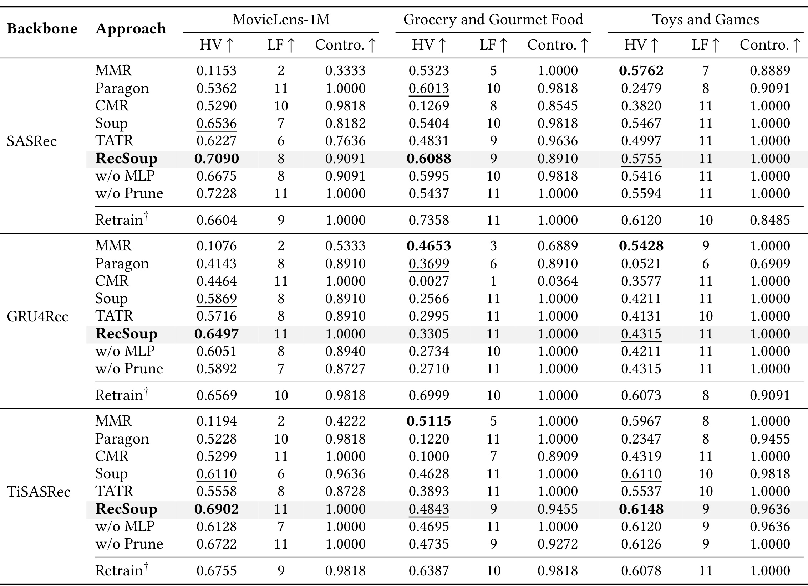
表 1 每个数据集都有三列：HV 是超体积，LF 是不同非支配解数量，Contro. 是偏好方向与指标变化是否一致的比例，方向都为越大越好。完整方法在 SASRec、MovieLens-1M 上的 HV 为 0.7090，相比 Soup 的 0.6536，按后者作分母约提高 8.48%；相对 TATR 的 0.6227 约提高 13.86%。但可控性为 0.9091，低于 Paragon 的 1.0000，LF 为 8 也低于部分方案的 11。这说明扩大前沿覆盖和完全单调可控之间存在取舍，不能只读加粗的 HV。SASRec 的 Food 数据上，HV 为 0.6088，略高于 Paragon 的 0.6013，但可控性 0.8910 明显低于其 0.9818，也低于 Soup、MMR 等方法；Games 上 HV 为 0.5755，略低于 MMR 的 0.5762，优势主要体现在更长前沿和可控性。因此“所有配置第一”与“所有指标无损”都不符合表中事实。
GRU4Rec 上，MovieLens 的 HV 为 0.6497，相对 Soup 的 0.5869 约增加 10.70%，可控性达到 1.0000。但 Food 与 Games 的 HV 分别为 0.3305、0.4315，均低于 MMR 的 0.4653、0.5428；相应地完整方法提供 11 个非支配点，而 MMR 只有 3 个、9 个。这是适用性判断的重要例子：如果业务只需要 MMR 已覆盖的某个操作点，较长前沿不一定抵消其质量差距；如果需要细粒度地调整偏好，更多可控操作点可能有额外价值。论文整体支持相对 Soup、TATR 的稳定改善，但面对重排或生成方法时，比较结果依赖骨干和数据集。
TiSASRec 在 MovieLens 上的 HV 为 0.6902，高于 Soup 的 0.6110，按表中数字计算相对提升约 12.96%；这与正文提到的部分提升描述并不完全对应，本文优先报告可从主表直接复算的值。Food 上 RecSoup 为 0.4843，仍低于 MMR 的 0.5115，Games 上为 0.6148，略高于 Soup 的 0.6110，但可控性 0.9636 低于 Soup 的 0.9818。不同指标间的细微交换提示，超体积不是唯一部署准则，参考点、指标归一化和采样偏好密度都可能改变其解释。主表没有为这些 HV 比较统一提供置信区间，不能把小差值自动读成统计显著改善。
可控性公式以不同偏好两两比较，而不是给某个操作点做单次质量打分：
符号解释：(M) 是偏好向量数量，(N) 是目标数量，(m_k(S_i)) 是第 (i) 个偏好输出在目标 (k) 的指标，逻辑合取要求所有目标方向同时符合预期。它刻画方向一致性，无法单独表达移动幅度是否够大、用户能否察觉或不同群体是否一致。若两个偏好只让指标微幅变化但方向正确，也可能获得很高分。因此复现除平均分之外，还应画出每个偏好的原始指标，检查局部反向和平台区域。
3.2 两阶段消融与结构证据
主表的去模块结果让贡献边界更清晰。SASRec、MovieLens 上去掉剪枝后 HV 为 0.7228，高于完整方法的 0.7090，可控性也从 0.9091 升为 1.0000；GRU4Rec、Games 上去剪枝与完整方法 HV 同为 0.4315。这些结果说明剪枝是一种条件性的干扰缓解策略，不能宣称任何任务向量都应稀疏化。反过来，SASRec、Food 上去剪枝 HV 从 0.6088 降到 0.5437，GRU4Rec、MovieLens 上从 0.6497 降到 0.5892，显示噪声或冲突较大时可能有价值。去掉系数学习改用恒等映射通常降低 HV，支持偏好与参数坐标需要校准，但并不意味着每一项可控性也同时改善。
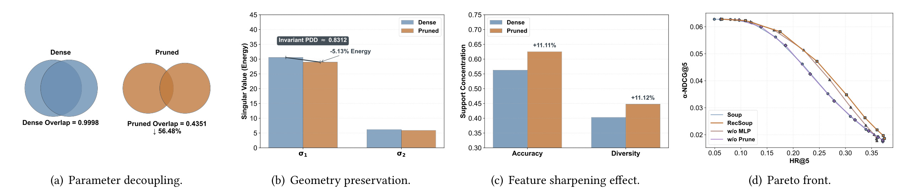
图 5 的四个子图从不同侧面解释剪枝。左侧支撑交并比从 0.9998 降为 0.4351，说明超过阈值的有效更新支撑重合减少；中间奇异值和方向结构变化较小，图中标出约 5.13% 能量下降；第三幅中两目标的支撑集中度约增加 11.11% 和 11.12%；最右边展示在该分析设定下完整方法的前沿优于去模块方案。这里重叠率降低与性能改善是机制上的一致证据，但并不构成严格因果分解：较低重叠可能意味着减少冲突，也可能删掉共享有用信号。表 1 中去剪枝更优的配置正说明，不能把“重叠越低越好”当作无条件目标。另外，支撑依赖一个小阈值，阈值变化可能影响交并比，因此复现时应做敏感性检查。图中保留主要奇异结构支持信息未被大幅扰动，但不等于所有样本、所有子群体的行为保持一致。
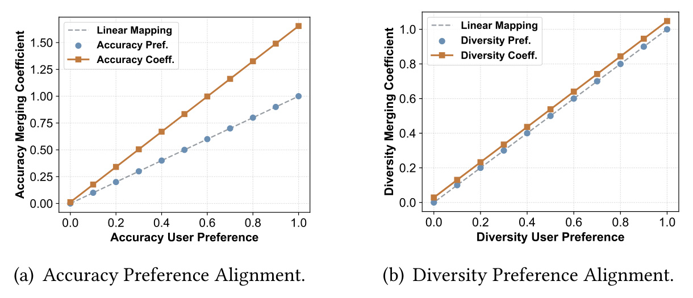
图 6 横轴均为用户偏好，蓝点和虚线表示直接将偏好作为系数，橙线表示训练得到的系数。准确率侧学习系数明显放大，多样性侧也有较小偏移，说明专家更新幅度并不能由偏好数值直接衡量。尤其准确率系数可以超过一，表明它不是在所有情况下严格位于专家凸组合内部。该图更接近线性缩放与偏移，而不是复杂深层网络学出的弯曲映射，与附录的单层 router 相吻合。它展示“系数不等于偏好”的事实，却没有直接展示推荐指标的单调性：从系数到输出还要经过整个推荐模型，因此需要用主表可控性和逐偏好曲线验证。对实现而言，应避免擅自加 softmax 把系数强制归一到单纯形，否则可能删除原方法依赖的放大自由度；也不能因为系数超过一就认为指标必然超过专家端点。
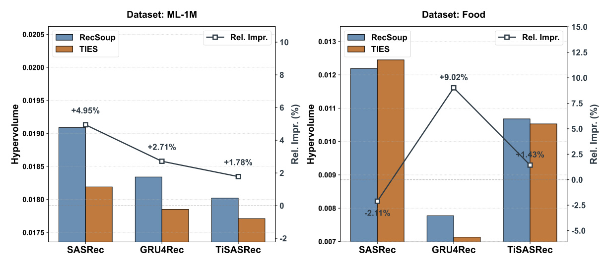
图 7 在相同系数和合并流程下比较 RecSoup 与 TIES，更接近隔离相关性分数作用的实验。MovieLens 的三个骨干相对 HV 改善分别为 4.95%、2.71%、1.78%；Food 的 GRU4Rec 与 TiSASRec 为 9.02%、1.43%，但 SASRec 为负 2.11%。这个负例不能被“相关性总是有用”的总结盖过。图中绝对 HV 的量级约为百分之一，与表 1 不同，不能跨图直接计算提升幅度；这里适宜读取同一子图、同一骨干中成对方案的相对变化。曲线和柱形分别使用左右坐标轴，视觉高度也不能跨轴比较。总体上该图支持多数设定中跨目标耦合信号有补充价值，同时也保留了目标规模、更新分布与剪枝策略不匹配的可能性。
3.3 参数构造效率的正确分母
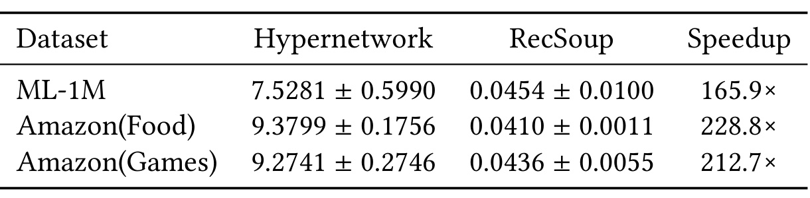
表 2 以毫秒报告超网络与 RecSoup 的参数构造时间，跨 11 个偏好取平均，结果又对 10 次运行平均。MovieLens 为 7.5281±0.5990 对 0.0454±0.0100，倍率 165.9；Food 为 9.3799±0.1756 对 0.0410±0.0011，倍率 228.8；Games 为 9.2741±0.2746 对 0.0436±0.0055，倍率 212.7。倍率的分母是 RecSoup 的参数构造耗时，绝不是完整推荐请求的端到端耗时。若请求主要时间消耗在序列模型前向、候选检索或特征读取，即使构造环节缩短很多，整体改善也可能有限。原文另给 10000 步扩散约每偏好 87.79 秒，这项对比强烈依赖去噪步数，不能当作所有扩散参数生成器的固定成本。
对工程迁移还应检查偏好切换粒度。同一偏好在一段时间内复用时，构造一次模型可以被大量请求摊销，构造优势未必是主要瓶颈；若每个用户或每次请求偏好都不同，则需要同时考虑多份临时参数的内存、并发重建和缓存命中率。本文并未提供这类高并发服务实验，也没有把专家训练、模型加载、参数搬运、完整前向和请求排队统一纳入时延预算。因此最可信的效率结论是：在原文测试条件下，已有向量的加权构造比超网络生成更快。进一步声称推荐服务吞吐提升两个数量级，还需要独立证据。
3.4 公平性扩展、三目标与附加基线
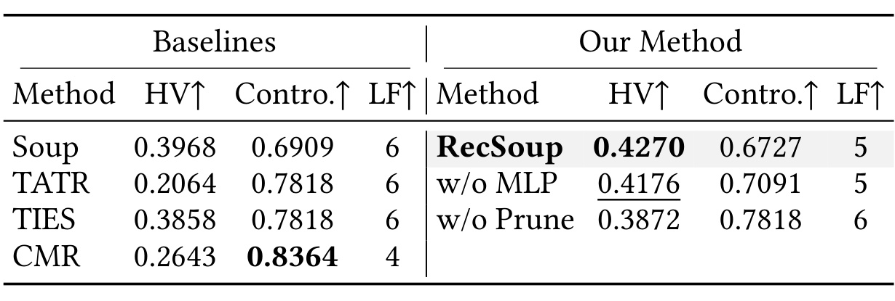
表 3 使用 MovieLens、SASRec，公平性依据男女用户群体 NDCG 差距的绝对值构建。RecSoup 的 HV 为 0.4270，高于 Soup 的 0.3968 和 CMR 的 0.2643；但其可控性为 0.6727，低于 CMR 的 0.8364，LF 为 5 也低于 Soup 的 6。去系数学习 HV 为 0.4176，去剪枝为 0.3872，表明两个模块在此设定下都对 HV 有帮助。不过去模块后的可控性更高，再次表明改善前沿覆盖不等于改善所有控制性质。这个公平定义是有限的群体效果差距，不能概括个体公平、曝光公平或所有弱势群体公平。原文因 Paragon 在该设置退化为单点而未纳入主比较，这也应作为比较范围限制保留。公平性目标的尺度和方向还应在训练前固定，避免仅凭群体差距变小就忽略整体准确率下降。
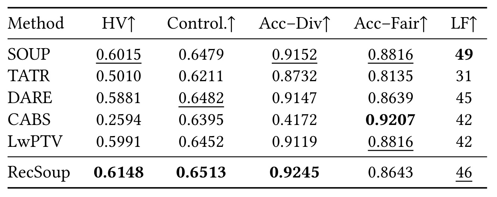
表 4 中 RecSoup 的三目标 HV 为 0.6148，平均可控性 0.6513，准确率与多样性配对可控性 0.9245，在表列方案中较优；然而准确率与公平性配对为 0.8643，低于 CABS 的 0.9207，LF 为 46，低于 Soup 的 49。因此“扩展到三个目标后所有指标领先”依然不成立。相对 Soup 的 HV 0.6015，其增幅约为 2.21%，需要结合随机性与参考点解释，而不是把小数差值直接等同稳定业务收益。CABS 虽然在一个配对上可控性好，HV 却只有 0.2594，说明局部控制与整体折中质量可能相差很大。三目标实验确实证明框架可以在原文条件下运行并提供一组结果，但没有证明增加更多约束之后仍保持同等稳定性。
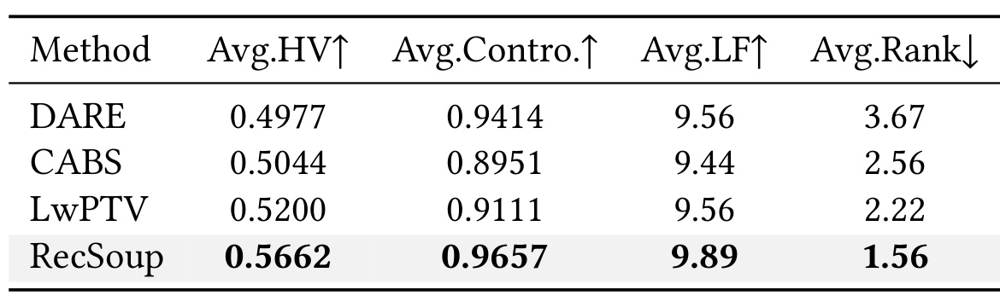
表 5 汇总 Accuracy–Diversity 配置，RecSoup 的平均 HV 为 0.5662、平均可控性 0.9657、平均 LF 9.89、平均排名 1.56；LwPTV 分别为 0.5200、0.9111、9.56、2.22。以 LwPTV 的平均 HV 为分母，增幅约 8.88%。这些汇总结果支持方法相对于更多剪枝合并方案的总体竞争力，也弥补主表只对照少数模型合并方法的不足。不过宏平均会掩盖困难配置与负向案例，不能替代表 1 的逐骨干逐数据检查；平均排名也依赖纳入哪些方案和配置。本文所有效果证据均为离线实验，没有线上 A/B、真实用户目标选择实验或长期留存指标，实际服务价值仍需验证。汇总时也应保留每个配置的权重，避免少量容易任务在平均数中稀释困难数据集的失败。
4. 总结
RecSoup 最值得保留的研究思路，是在已有专家条件下，把“选择更新坐标”与“校准目标配比”拆开。它没有要求重新训练一个覆盖所有偏好的完整大模型，也没有把偏好控制局限在已有列表的重排上。剪枝以自身能量与跨目标耦合共同排序，再按累计能量决定每个专家保留多少；低维映射随后负责把业务偏好转成参数系数。这套分工让性能问题能够被更细地诊断：前沿不够宽可能来自专家基底不足，偏好不单调可能来自系数学习或指标响应，剪枝无益则可能是原始专家已经足够相容。
原文结果对系数校准的支持比对“任何场景都应剪枝”的支持更一致。SASRec、MovieLens 上去剪枝更优，Games 等配置上完整方法也并非所有基线中 HV 最高。保留这些负例不会削弱论文价值，反而让下一步实验更具体：先测原始更新之间的兼容程度，检查能量集中和支撑重合，再决定是否启用稀疏化。它也提示可将剪枝当作待选择的配置，而不是不可关闭的结构。若只摘取摘要“更高质量前沿”与“百倍加速”，读者会错过这些决定适用范围的条件。
理论部分应谨慎使用。专家凸包被假设为 Pareto 集、生成器有较小 Lipschitz 常数、端点精确匹配等条件，使结论远比“模型合并优于一切参数生成”狭窄。实际可学习系数又可能超出凸组合，剪枝还改变基向量，因此理论中的集合和实验模型族不能未经说明直接等同。类似地，PCA 分布只是经验线索，不是不存在共享线性子空间的完整证明。适当的解读是：这些分析提出为什么直接任务算术可能不足，并指出特定受限生成器的覆盖瓶颈；实验说明两阶段方案在若干推荐配置中有竞争力。
后续复现应先锁定同一个物品映射、训练分割与共享参考检查点，保证任务向量坐标确实可相加；再重现恒等系数、学习系数、带剪枝和不带剪枝四组操作点，保存每个偏好的原始指标而不只保存 HV。若这些基础结果成立，再检验专家不同随机种子、不同保留阈值和更新尺度下的稳健性，尤其关注跨目标项未归一化时是否改变排序。这样可以区分真正减少目标冲突与单纯依靠重缩放改善模型的效果，也有助于解释某些负向剪枝配置。
如果面向工业推荐，下一步最值得验证的是完整服务路径的成本与控制体验。应分别测量系数计算、参数合并、内存搬运、推荐前向和缓存命中，再在相同硬件、相同候选规模下比较吞吐和尾延迟。目标权重来自用户还是系统、能否按请求改变、是否需要群体约束，也需要明确。本文没有给出线上效果，不应由离线公平差距或采样排名推断实际商业收益。对于推荐工程师，它是一条可测试的模型复用路线；对于模型合并研究者，它提供了任务向量不易兼容时，先处理基底再学习坐标的具体案例。原文公开代码便于检查这些机制，但仓库可访问只是复现起点，还需要核对训练配置、专家来源、指标参考点和计时同步方式。只有这些条件能够对齐，微小的前沿差异和参数构造时间才有可比较的含义。本文为论文研究与技术学习记录，所有迁移建议均为后续实验方向。